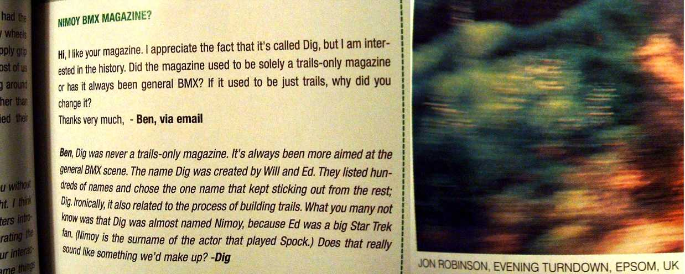

| well, i got into dig. i am not sure how that happened! i never even meant for them to publish it or i would have written in proper sentences. it was weird, cos i just wrote an email out of interest. then i went to go and buy a map of surrey so i can mark on all the places to ride, when i got distracted by the magazines and went to buy ride. ride wasn't there so i picked up dig and got that instead. walking to my car i started to read it (risking my life by walking out infront of cars) and i noticed an interesting letter about the hardcore image of rider owned companies. this kept me reading all the way back to my car, so i put the mag down and drive off. it wasn't till later that night that i noticed my letter. i though it looked familiar, and then i realised why. so that was weird. also, if you're not bored of me saying it, i have just started working in epsom, so when i saw this caption by jon robinson i was pretty excited and it took me a while to get to sleep! the next day i went to nonsuch park (i had seen nonsuch trails on crankonline) and suprise suprise, who was there but jon robinson. his trails are amazing. i went today and tried to ride them the first is nice and floaty, but i can't get the second. i cane off bad and mashed up my wrist. it hurts to type. |  |